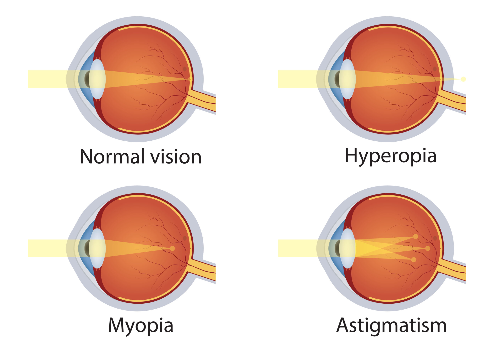

Scleral Lenses
Soft contact lenses are probably what most people think about when they think about contact lenses. These are easily accessible, good general use lenses and work for the large majority of people. They also have uses beyond the standard vision correction- there are ones that have been shown to help slow the progression of short-sightedness, and ones that are used therapeutically to help protect the front of the eye when it gets damaged.
- Here is a list of the main reasons why your optometrist may recommend soft contact lenses:
- Myopia (short-sightedness) or hyperopia (long-sightedness): commonly covering prescriptions between +6.00D to -12.00D, though some brands offer options outside this range which makes these very good for avoiding super thick and heavy glasses.
- Astigmatism: if your level of astigmatism is -0.75DC or higher, a toric lens can be used to correct for this. The corrections offered generally ranges from -0.75DC to -2.75D.C
- Myopia control for children: examples include MiSight (from -0.50D to -7.00D)1 and the soon to be available (in Australia) Abiliti 1-Day (from -0.25D to -8.00D)2. These options both correct vision and help slow myopia progression. Unfortunately, there are no toric options, so these cannot correct higher levels of astigmatism.
- Damage to the cornea (front part of the eye): a "bandage contact lens" can be used to provide extra protection while your cornea heals.
- Your lifestyle! Wanting to get out of glasses is reason enough try out contact lenses, but other factors like playing sports (particularly contact sports) can also mean you may benefit more from soft contact lenses than from normal glasses.
| Advantages | Disadvantages |
|---|---|
|
Short and easy adaptation period with good initial comfort Common and easy to get Wide range of options to suit many different lifestyles |
Hard to use for irregularly shaped corneas and high astigmatism Can be prone to protein deposits and drying out Less durable Higher risk of infection and inflammation |
1. Chamberlain, P., Peixoto-de-Matos, S. C., Logan, N. S., Ngo, C., Jones, D., & Young, G. (2019). A 3-year randomized clinical trial of MiSight lenses for myopia control. Optometry and Vision Science, 96(8), 556-567.
2. Cheng, X., Xu, J., & Brennan, N. A. (2023). Randomized trial of soft contact lenses with novel ring focus for controlling myopia progression. Ophthalmology science, 3(1), 100232.